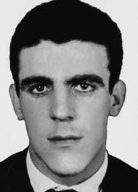

Gilberto
Olímpio
Maria
CIRCUNSTÂNCIAS DA MORTE
Segundo o Relatório Arroyo, Gilberto Olímpio Maria era uma das 15 pessoas que se encontravam no acampamento da Comissão Militar na hora do ataque das Forças Armadas ocorrido em 25 de dezembro de 1973, episódio conhecido como “Chafurdo de Natal”.
O relatório do Ministério da Marinha de 1993 e o Relatório do CIE, Ministério do Exército também registram esta data para a morte de Gilberto. Tal informação ainda é corroborada pelo depoimento do segundo tenente da Polícia Militar de Goiás, João Alves de Souza, prestado à Comissão Nacional da Verdade, em 20 de março de 2014, no qual ele confirma o nome do guerrilheiro entre os mortos no “Chafurdo de Natal”.
O depoente revela ainda novas informações sobre as circunstâncias de sua morte, declarando: “o fato que aconteceu é que eles o mataram, não sei se cortaram a goela dele fora, cortaram o pescoço dele fora lá e mataram ele covardemente, sabe? Isso eu sei”. Já o relatório do Ministério do Exército de 1993 se refere à reportagem do jornal O Estado de S. Paulo do dia 10 de outubro de 1982, que teria publicado foto de alguns cadáveres, entre eles o de Gilberto.
De acordo com a matéria, o guerrilheiro teria morrido em 24 de dezembro de 1973, em confronto com uma patrulha, na região entre Marabá (PA) e Xambioá (TO) e sido enterrado no local devido às dificuldades de transportá-lo na selva.
According to the Arroyo Report, Gilberto Olímpio Maria was one of 15 people who were at the Military Commission camp at the time of the Armed Forces attack on December 25, 1973, an episode known as “Christmas Wallowing”.
The 1993 Ministry of the Navy report and the CIE Report, Ministry of the Army also record this date for Gilberto's death. This information is further corroborated by the testimony of the second lieutenant of the Military Police of Goiás, João Alves de Souza, given to the National Truth Commission, on March 20, 2014, in which he confirms the name of the guerrilla among those killed in the “Walk of Natal”.
The deponent also reveals new information about the circumstances of his death, declaring: "the fact that happened is that they killed him, I don't know if they cut his throat out, cut his neck out there and killed him cowardly, you know? I know that." The 1993 Ministry of the Army report refers to the report in the newspaper O Estado de S. Paulo on October 10, 1982, which published a photo of some bodies, including Gilberto's.
According to the article, the guerrilla died on December 24, 1973, in a confrontation with a patrol, in the region between Marabá (PA) and Xambioá (TO) and was buried there due to the difficulties of transporting him in the jungle.
Según el Informe Arroyo, Gilberto Olímpio María era una de las 15 personas que se encontraban en el campamento de la Comisión Militar al momento del ataque de las Fuerzas Armadas el 25 de diciembre de 1973, episodio conocido como “Revuelco de Navidad”.
El informe del Ministerio de Marina de 1993 y el Informe CIE del Ministerio del Ejército también registran esta fecha de la muerte de Gilberto. Esta información es corroborada además por el testimonio del segundo teniente de la Policía Militar de Goiás, João Alves de Souza, presentado ante la Comisión Nacional de la Verdad, el 20 de marzo de 2014, en el que confirma el nombre del guerrillero entre los muertos en el “Paseo de Natal”.
El declarante también revela nuevos datos sobre las circunstancias de su muerte, declarando: “lo que pasó es que lo mataron, no sé si lo degollaron, le cortaron el cuello por ahí y lo mataron cobardemente, ¿sabes? Eso lo sé”. El informe del Ministerio del Ejército de 1993 hace referencia al reportaje del diario O Estado de S. Paulo del 10 de octubre de 1982, que publicó una fotografía de algunos cadáveres, entre ellos el de Gilberto.
Según el artículo, el guerrillero murió el 24 de diciembre de 1973, en un enfrentamiento con una patrulla, en la región entre Marabá (PA) y Xambioá (TO) y fue enterrado allí debido a las dificultades para transportarlo en la selva.